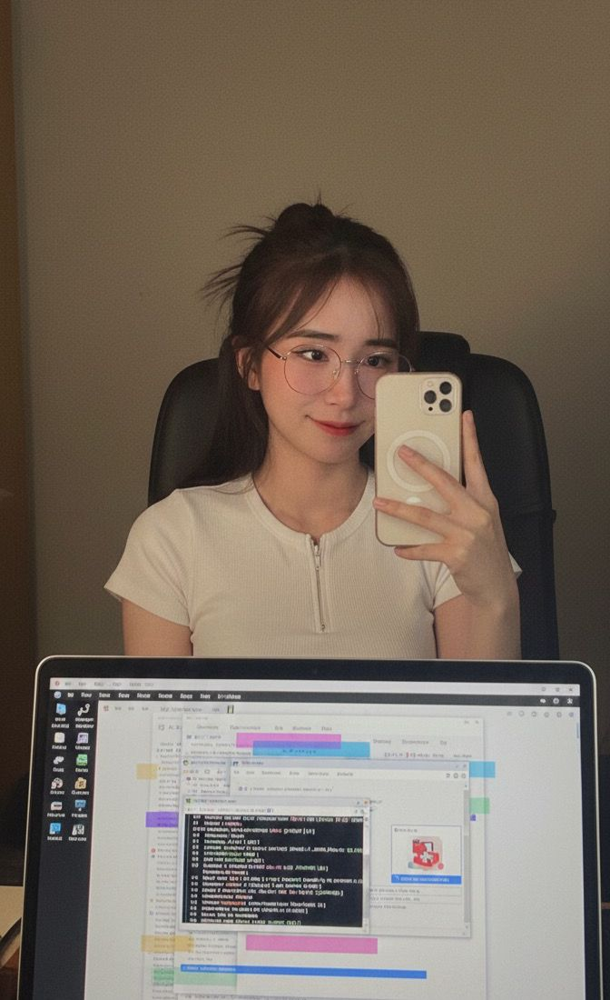
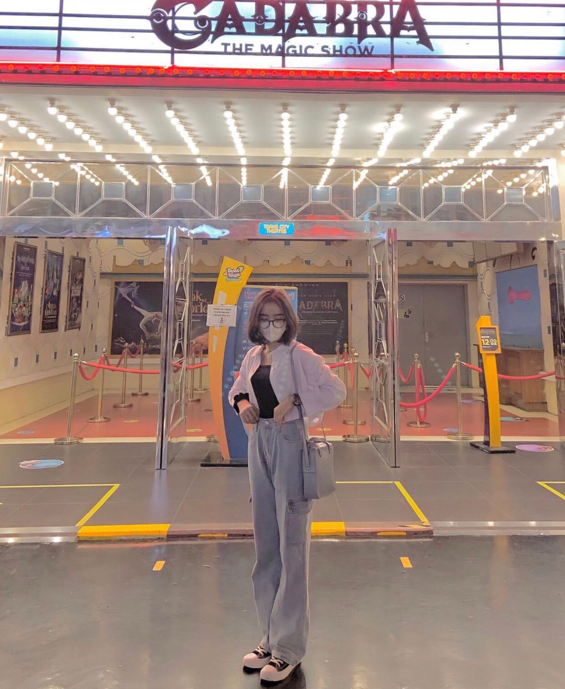

That Smile
"Senyum yang selalu punya cerita sendiri. ❤️"
Celebrating another beautiful chapter of your life, sayang
Hey Sayang,
Wish you a very Happy Birthday, Aurelia! 🎂 Semoga di umur yang baru ini, semua hal baik datang satu per satu. Semoga apa yang ayang semogakan bisa menemukan jalannya, dan semoga ayang selalu punya alasan untuk tersenyum setiap harinya
Thank you for being you. Tetap jadi Aurelia yang aku kenal, dengan segala cerita, tawa, dan keunikanmu. Semoga perjalananmu ke depan dipenuhi banyak hal indah, orang-orang baik, dan tentunya banyak momen yang layak untuk dikenang
Once again, Happy Birthday! 🥳 Semoga hari ini menjadi salah satu halaman terbaik dalam cerita hidupmu
With love,
Dari aku, untuk ayang ❤️

Semua cerita pasti punya halaman pertama. Dan ini adalah halaman pertama dari cerita kita. Mungkin waktu itu kita belum tahu kalau pertemuan sederhana itu bakal menjadi bagian dari banyak cerita yang kita punya sekarang. Funny how one ordinary moment can become a memory worth remembering
Dari sekian banyak hari yang sudah dilewati, ada beberapa momen yang rasanya selalu punya tempat sendiri. Ada tawa, ada cerita random, ada momen yang mungkin terlihat sederhana, tapi justru menjadi bagian yang paling sulit dilupakan. Maybe the best memories are made from the simplest moments
Kalau hidup adalah sebuah buku, mungkin setiap orang yang datang akan menjadi satu bab di dalamnya. Dan ayang adalah salah satu bab yang membuat cerita ini menjadi lebih menarik. Terima kasih sudah menjadi bagian dari perjalanan ini. Semoga masih banyak chapter baru yang bisa ditulis setelah hari ini

Hari ini bukan cuma tentang bertambahnya usia. Ini adalah awal dari chapter baru. Semoga chapter berikutnya membawa lebih banyak kebahagiaan, lebih banyak kesempatan, lebih banyak pencapaian, dan lebih sedikit hal yang membuatmu sedih. Keep going, Aurelia. Your story is far from over. 🌸
A collection of little moments worth keeping 🌸
And before this little story ends...
Semoga di usia yang baru ini, ayang selalu dikelilingi hal-hal baik, orang-orang baik, dan alasan-alasan kecil untuk terus tersenyum.
Terima kasih sudah menjadi bagian dari cerita ini. Semoga masih ada banyak chapter indah yang menunggu untuk kita tulis bersama. 🌸
From me, to you.